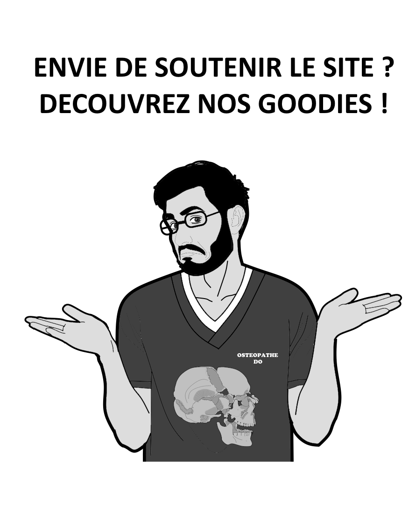
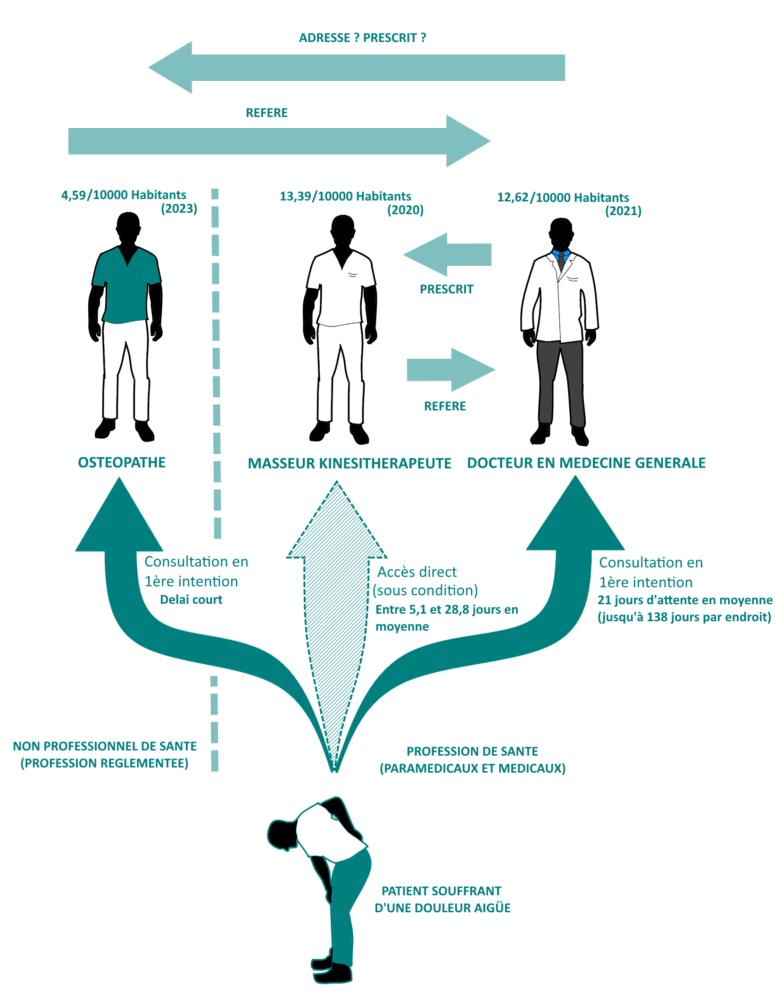
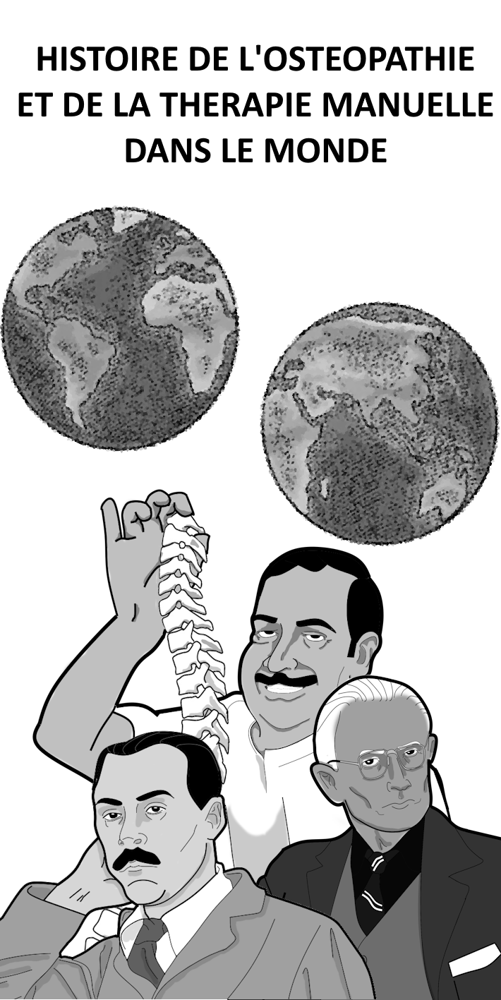
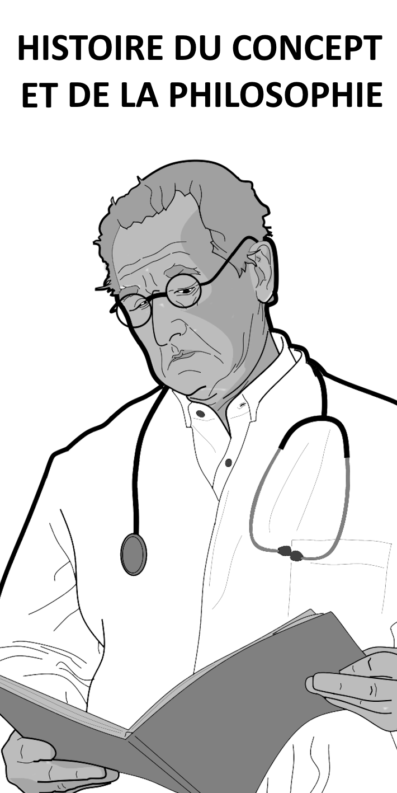

Le système de santé français subit une pénurie de médecin depuis plusieurs années. Plusieurs solutions avancées pour compenser les difficultés sont la transformation du numerus clausus en numerus apertus, le transfert de compétence entre professionnels médicaux et paramédicaux, ou la téléconsultation. À l’opposé, certaines dispositions prises par le passé pour flécher le parcours de soin accentuent les difficultés. En effet, on estimait à 700.000 le nombre de patients en Affection Longue Durée (ALD) sans Médecin Traitant (MT) fin 2022(1), créant de facto, une difficulté d’accès. Ce chiffre a diminué en 2023 grâce à un plan d’action gouvernemental, mais laissant encore quelque 472.000 patients en ALD sans MT.

